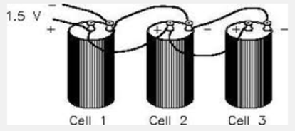

How Electricity Is Made
Have you ever wondered where electricity comes from? You might be surprised to learn that it comes from magnets!
In the early 1800s, Michael Faraday discovered "electromagnetic induction", which is the scientific way of saying that if he moved a magnet through a loop of wire, the wire would become electrified.
In 1882, Thomas Edison opened the first full-scale power plant in New York City. Edison's electric generator was a bigger version of Faraday's basic experiment; a big magnet rotates around a wire to produce an electric current.
Today's power plants are bigger and controlled by computers, but the basic process is still the same as it was nearly 120 years ago.
Electricity generation is the process of generating electric power from other sources ofprimary energy.. The other processes, electricitytransmission, distribution, and electrical power storage and recovery using pumped-storage methods are normally carried out by the electric power industry. Electricity is most often generated at a power station by electromechanicalgenerators, primarily driven byheat engines fueled by chemicalcombustion ornuclear fission but also by other means such as the kinetic energy of flowing water and wind. Other energy sources include solar photovoltaics and geothermal power.
Ways of generating electricity
Static electricity
Static electricity often happens when you rub things together. If you rub a balloon against your jumper 20 or 30 times, you'll find the balloon sticks to you. This happens because rubbing the balloon gives it an electric charge (a small amount of electricity). The charge makes it stick to your jumper like a magnet, because your jumper gains an opposite electric charge. So your jumper and the balloon attract one another like the opposite ends of two magnets.
Have you ever walked across a nylon rug or carpet and felt a slight tingling sensation? Then touched something metal, like a door knob or a faucet (tap), and felt a sharp pain in your hand? That is an example of an electric shock. When you walk across the rug, your feet are rubbing against it. Your body gradually builds up an electric charge, which is the tingling you can sense. When you touch metal, the charge runs instantly to Earth—and that's the shock you feel.
Lightning is also caused by static electricity. As rain clouds move through the sky, they rub against the air around them. This makes them build up a huge electric charge. Eventually, when the charge is big enough, it leaps to Earth as a bolt of lightning. You can often feel the tingling in the air when a storm is brewing nearby. This is the electricity in the air around you. Read more about this in our article on capacitors.
Hydro Power
"Hydro" means "water" in Greek - so "hydro power" is made from water.
It might sound odd that we can use water to make electricity because they're a dangerous combination, right? Actually, the water never comes in contact with the electricity. The water flowing down a river is used to spin the turbines inside the generator.
|
|

People have used water power for more than 2,000 years. Ancient Egyptians used water wheels for grinding grain, and early Americans learned how to use them for sawing wood.
|
First hydro power plant in Appleton, Wisconsin |
Photo courtesy of “dam across river, Appletown, Wis.,” 1880-1889. Prints and Photographs Division, Library of Congress.
Wind Energy and Wind Power
Wind is a form of solar energy. Winds are caused by the uneven heating of the atmosphere by the sun, the irregularities of the earth's surface, and rotation of the earth. Wind flow patterns are modified by the earth's terrain, bodies of water, and vegetative cover. This wind flow, or motion energy, when "harvested" by modern wind turbines, can be used to generate electricity.
How Wind Power Is Generated
The terms "wind energy" or "wind power" describe the process by which the wind is used to generate mechanical power or electricity. Wind turbines convert the kinetic energy in the wind into mechanical power. This mechanical power can be used for specific tasks (such as grinding grain or pumping water) or a generator can convert this mechanical power into electricity to power homes, businesses, schools, and the like.
|
Solar energy |
||
|
|
In the 1830s, the British astronomer John Herschel used a solar collector box to cook food during an expedition to Africa. Now, people are trying to use the sun's energy for lots of things. Electric utilities are trying photovoltaics, a process by which solar energy is converted directly to electricity. Electricity can be produced directly from solar energy using photovoltaic devices or indirectly from steam generators using solar thermal collectors to heat a working fluid.
|
Photovoltaic energy |
||
|
||
|
What is the difference between "solar energy" and "photovoltaic?
|
|
|
Photovoltaic energy is the conversion of sunlight into electricity through a photovoltaic (PVs) cell, commonly called a solar cell. A
photovoltaic cell is a non-mechanical device usually made from silicon alloys.
|
||

Batteries: Electricity though chemical reactions
Batteries consist of one or more electrochemical cells that store chemical energy for later conversion to electrical energy. Batteries are used in many day-to-day devices such as cellular phones, laptop computers, clocks, and cars. Batteries are composed of at least one electrochemical cell which is used for the storage and generation of electricity. Though a variety of electrochemical cells exist, batteries generally consist of at least one voltaic cell . Voltaic cells are also sometimes referred to as galvanic cells. Chemical reactions and the generation of electrical energy is spontaneous within a voltaic cell, as opposed to the reactions electrolytic cells and fuel cells .
It was while conducting experiments on electricity in 1749 that Benjamin Franklin first coined the term "battery" to describe linked capacitors. However his battery was not the first battery, just the first ever referred to as such. Rather it is believed that the Baghdad Batteries, discovered in 1936 and over 2,000 years old, were some of the first ever batteries, though their exact purpose is still debated.
Luigi Galvani (for whom the galvanic cell is named) first described "animal electricity" in 1780 when he created an electrical current through a frog. Though he was not aware of it at the time, this was a form of a battery. His contemporary Alessandro Volta (for whom the voltaic cell and voltaic pile are named) was convinced that the "animal electricity" was not coming from the frog, but something else entirely. In 1800, his produced the first real battery: the voltaic pile
Voltaic Cells
Voltaic cells are composed of two half-cell reactions ( oxidation-reduction ) linked together via a semi permeable membrane (generally a salt bath) and a wire (Figure 1). Each side of the cell contains a metal that acts as an electrode . One of the electrodes is termed the cathode, and the other is termed the anode. The side of the cell containing the cathode is reduced, meaning it gains electrons and acts as the oxidizing agent for the anode. The side of the cell containing the anode is where oxidation occurs, meaning it loses electrons and acts as the reducing agent for the cathode. The two electrodes are each submerged in an electrolyte , a compound that consists of ions. This electrolyte acts as a concentration gradient for both sides of the half reaction, facilitating the process of the electron transfer through the wire. This movement of electrons is what produces energy and is used to power the battery.
The cell is separated into two compartments because the chemical reaction is spontaneous. If the reaction was to occur without this separation, energy in the form of heat would be released and the battery would not be effective.
Figure 1: A Zinc-Copper Voltaic cell
Types of Batteries
Figure 2: Primary versus Secondary Batteries
Primary batteries (left) are non-rechargeable and disposable. Secondary batteries (right) are rechargeable, like this cellular phone battery.
Primary Batteries
Primary batteries are non-rechargeable and disposable. The electrochemical reactions in these batteries are non-reversible. The materials in the electrodes are completely utilized and therefore cannot regenerate electricity. Primary batteries are often used when long periods of storage are required, as they have a much lower discharge rate than secondary batteries.
Use of primary batteries is exemplified by smoke detectors, flashlights, and most remote controls.
Secondary Batteries
Secondary batteries are rechargeable. These batteries undergo electrochemical reactions that can be readily reversed. The chemical reactions that occur in secondary batteries are reversible because the components that react are not completely used up. Rechargeable batteries need an external electrical source to recharge them after they have expended their energy.
Use of secondary batteries is exemplified by car batteries and portable electronic devices.
Battery Cell Types
Wet Cells
Wet cell batteries contain a liquid electrolyte. They can be either primary or secondary batteries. Due to the liquid nature of wet cells, insulator sheets are used to separate the anode and the cathode. Types of wet cells include Daniell cells, Leclanche cells (originally used in dry cells), Bunsen cells, Weston cells, Chromic acid cells, and Grove cells. The lead-acid cells in automobile batteries are wet cells.
Figure 3: A lead-acid battery in an automobile.
Dry Cells
In dry cell batteries, no free liquid is present. Instead the electrolyte is a paste, just moist enough to allow current flow. This allows the dry cell battery to be operated in any position without worrying about spilling its contents. This is why dry cell batteries are commonly used in products which are frequently moved around and inverted, such as portable electronic devices. Dry cell batteries can be either primary or secondary batteries. The most common dry cell battery is the Leclanche cell.
BASIC COMPONENTS OF AN ELECTRIC CIRCUIT
A simple electric circuit has at least three components:
- A source of energy, such as a battery.
- Conducting material, such as the electric wires. These are mainly metals such as silver, copper, aluminum, etc.
- A device that transfers the energy for a useful purpose, such as the bulb that provides light, also called a load.
- Switch
When these are present in a closed path, we have current flowing through the circuit and the bulb lighting up. This is called a closed circuit. The conductor is responsible for providing the path of movement for electric current. The switch allows the user to close or open the circuit.
However, when there is an insulator such as a rubber or even a gap of air in the path, current ceases to flow and we say the circuit is open-circuited. This happens because insulators do not allow current to pass through them. They are therefore called non-conducting material. Some other examples of non-conducting material are: wood, plastic, glass, ceramics, etc.
The essence of having a battery in the setup is to serve as a source of voltage. One voltage is the energy needed to drive a unit of current through a unit resistance. In other words, the source of voltage provides the energy that drives the current around the path. Voltage is also called potential difference, is measured in Volts (V) and the voltage across a component is measured with a voltmeter connected across it, or in parallel with it.
Current is the total charges that pass a point per second . Mathematically, this is represented as
That is, the speed at which charges is moving in the path. It is measured in Amperes (A), and the current through a component is measured with an ammeter connected in series with it.
The device that transfers the energy for a useful purpose is a form of resistance. Resistance is the opposition to the flow of current. As the device opposes the flow of current , charges lose their energy to the device, and this lost energy is converted into forms of energy such as heat (in the case of the iron, or the electric stove) or light ( in the case of a light bulb). Resistance is measured in ohms (Ω) and with an ohmmeter.
ACTIVITY:
|
|
|
|
(a) This connection is correct because there is a closed path for current. |
(b) This connection is wrong because there is no closed path for current. |
|
|
|
|
(c) This connection is wrong because there is no closed path for current through the bulb. |
(d) This connection is wrong because there is no closed path for current. |

Connection types
Basically, there are two types of connections: the series connection and the parallel connection.
Series connection: two components are said to be connected in series when the positive side (terminal) of one is connected to the negative terminal of the other. For example, we connect two cells in series when we connect the tip (ie., the positive terminal) of one to the base (ie., the negative terminal) of the other. In the series connection, removal of one battery results in an open circuit. When two cells are connected in series, their voltages add up and together, they produce a current equal to the sum of their individual currents. This means that series-connected cells give of more current, and hence more brightness to lamps. However, they die down faster.
|
|
|
|
Diagrammatic representation |
Circuit diagram |

Parallel connection: two components are said to be connected in parallel when the positive terminal of one is connected to the positive terminal of the other, and the negative terminals as well. When this happens, the batteries have the same value. When one battery is removed, it does not affect the other and the bulb is still lit. Hence, this connection is mostly used in homes and buildings.
|
 |
|
|
Diagrammatic representation |
Circuit representation |
The Ohm’s Law
Ohm was a scientist who devoted time in developing the concept of electricity. He came up with a law that showed the relationship between current, resistance and voltage. The following is a summary of the Ohm’s law:
The voltage across a component in an electric circuit is directly proportional to the current through it, the constant of proportionality being the resistance of the component.
Mathematically, the Ohm’s law is stated as:
This means that as the voltage across a component increases, the current increases as well. Nevertheless, the resistance is constant.
Illustration:
What will be the potential difference across a 50Ω resistor if a current of 5A is flowing through it?
Top of Form
a) 0.25 Volts
b) 250 Volts
c) 5 Volts
d) 50 Volts
Bottom of Form
Answer: B.
Power
Power is the ability to do work. In electrical energy terms, we say power is the rate at which electrical energy is used. That is, the rate at which electrical energy is converted into some other form of energy. Mathematically, power, in electrical energy terms, is given by
It is measured in Watts, and with a wattmeter.
Illustration:
What is the total power supplied to a load connected across a 5v battery when 2A of current passes through it?
a) 10 Watts
b) 25 Watts
c) 5 Watts
d) 0.1 Watts
Bottom of Form
Answer: A.
Some electrical gadgets
The electric heater:
Electric heaters have been around for decades as a source of heat in homes to provide warmth to us. One of the reason for their popularity is because of lower cost to purchase and easy maintenance compared to other sources of heat. They are usually powered by electricity though a small percentage are still using propane or kerosene as fuel. They work by converting electricity into heat using metals as heating elements. The metals have high resistance that permit a certain amount of current to flow though them to provide the required heat. Electrical energy is changed into heat energy.
The loud speaker:
When things shake about, or vibrate, they make the sounds we can hear in the world around us. Sound is invisible most of the time, but sometimes you can actually see it! If you thump a kettle-drum with a stick, you can see the tight drum skin moving up and down very quickly for some time afterward—pumping sound waves into the air. Loudspeakers work in
a similar way. At the front of a loudspeaker, there is a fabric, plastic,paper, or lightweight metal cone (sometimes called a diaphragm) not unlike a drum skin (colored gray in our picture). The outer part of the cone is fastened to the outer part of the loudspeaker's circular metal rim. The inner part is fixed to an iron coil (sometimes called the voice coil, colored orange in the diagram) that sits just in front of a permanent magnet (sometimes called the field magnet, and colored yellow). When you hook up the loudspeaker to a stereo, electrical signals feed through the speaker cables (red) into the coil. This turns the coil into a temporary magnet or electromagnet. As the electricity flows back and forth in the cables, the electromagnet either attracts or repels the permanent magnet. This moves the coil back and forward, pulling and pushing the loudspeaker cone. Like a drum skin vibrating back and forth, the moving cone pumps sounds out into the air.
The electric motor:
The electric motor basically converts electrical energy into mechanical energy. When current is passed through a coil of wire, a magnetic field appears around the entire wire. On two sides, the magnetic forces add up, making the force in that region higher than elsewhere. Thus, the magnetic force pushes the coil and causes it to rotate around a rod called the rotor.
Protection of appliances
Every appliance connects to power supply by its plug. Thus, a plug serves as a point of connection for an appliance. A plug may be two-pin (that is, have only two pins that fit into a socket) or three-pin (that is, have three pins that fit into a socket).
The three pins of a three-pin plug are the live pin, the neutral pin, and the earth pin. The live pin is connected to the live wire, which carries power or current to the appliance. Since this wire is very active, it is important that it is controlled to limit how much current is taken to the appliance. Hence, a fuse is inserted in the live wire, just after the live pin. The fuse is a protective device, and is essentially a thin wire that melts when too much current passes through it. The incidence of too much current in an appliance may be caused by electrical faults within the appliance, or in the national grid. The live wire is brown in color, or red in some cases.
The neutral pin is connected to the neutral wire, which serves as the return path for current after passing through the appliance. It is blue in color, or black in some cases.
Then there is the earth pin, which is connected to the earth wire. The earth wire is another protective measure. There are times when current in the live wire leaks to the casing of the appliance, endangering the lives of the users. Thus, the earth wire is connected to the casing of the appliance in order to serves a return path for current that leaks. By doing this, a heavy current is drawn and the fuse melts. The earth wire is green and yellow in color.
not here